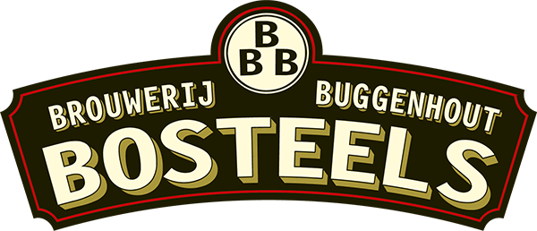
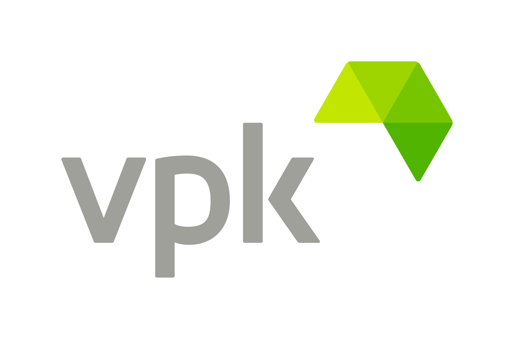

Werkervaring

Bandmedewerker
Brouwerij Bosteels / Buggenhout / 02/09/19 – 12/09/19
- Aan de band staan en controleren of alle flesjes goed zijn voor in te laden in de camion.
- Bakken verplaatsen van de band op een pallet.
- Flesjes wassen om opnieuw te kunnen gebruiken.
- Dopjes controleren op de flesjes.

Magazijnier
VPK / Oudegem / 19/08/19 – 25/08/19
- De stapels met dozen die gemaakt moeten worden en correct de camion ingeladen moeten worden controleren en hermaken.
- Kartonnen stapels her stapelen.
- Foutieve dozen uit de stapel halen.
- Dozen bij elkaar zippen.
- Stapels op de band laden.

Internship - Mainframe Team Payments
KBC Bank & Verzekering / Vlaanderen / Feb 2025 – Present
- ISO-V8 implementatie binnen afspraken systeem CAMT53.
Apprenticeship - Mainframe Work-Based-Learning
KBC Bank & Verzekering / Vlaanderen / Okt 2024 – Jan 2025
- Mainframe omgeving leren beheren.
- Praktische ervaring met mainframe.

Shop Employee
Okay / Berlare / Okt 2024 – Dec 2024
- Kassawerk en aanvullen van rekken.
- Klantgericht werken en winkel netjes houden.